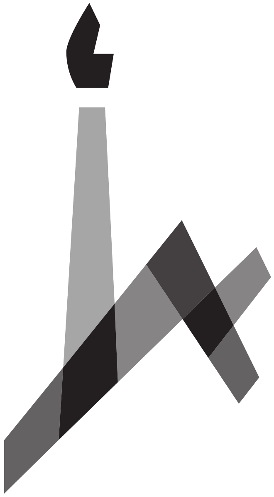

Yair Mau
Senior Lecturer
Institute of Environmental Sciences
 The Hebrew University of Jerusalem
Contact
yair.mau@mail.huji.ac.il
+972 8 948 9386
Rehovot Campus, Lubell building, office 19. Map here
About
I’m fascinated by the natural world. I started out studying Physics, and then decided to use mathematical tools to understand processes in the critical zone, especially those concerning fluxes of water and carbon in the soil-plant-atmosphere continuum, both in the natural and agricultural environments.
I’m interested in understanding how the feedbacks between climate, human stressors, and ecosystems, create interesting environmental dynamics. The main topics I deal with include plant resilience and survival under drought, soil degradation, sustainable resource use. Go the to Science page to learn more about some of my current projects, and check out the Papers page for details on already published works.
Besides the usual academic pages (Science, Papers, Group, Courses), I hid a lot of material in the More page: tutorials (python, latex), quotes, recommendations, etc.
Philosophy of life: if you’re not having fun, you’re doing it wrong.